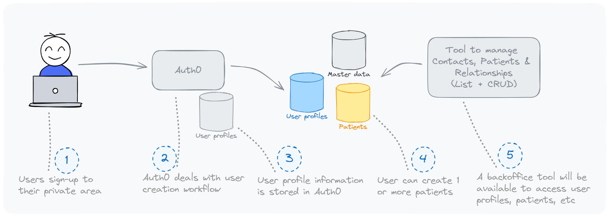

Rett Syndrome Patient Registry - Functional Documentation
1. Overview
The Rett Syndrome Patient Registry is a secure, user-centered platform designed to collect, manage, and analyze data related to Rett Syndrome. The registry provides a private area where caregivers can easily manage patient information, contribute ongoing data, and upload essential documents—all within a seamless and intuitive experience. With privacy and GDPR compliance as key priorities, the system leverages modern technology to simplify data entry while ensuring robust protection of personal information.
Key Objectives:
Streamlined Onboarding: Allow caregivers to sign up and create patient profiles directly within a secure private area.
Patient Data Management: Enable users to manage patient information within their private area, ensuring a smooth user experience.
Longitudinal Data Collection: Engage caregivers through integrated surveys within the private area to build valuable longitudinal data on Rett Syndrome progression.
File Upload: Allow caregivers to securely upload important files like genetic reports directly from the private area.
Admin Data Interaction: Provide backoffice tools for administrators to oversee patient and contact data for accurate records and regulatory compliance.
Security & Compliance: Ensure GDPR-compliant data handling, using modern authentication and audit mechanisms to safeguard privacy.
Key Functional Areas
1. Public Landing Page
The public landing page is built on WordPress with Elementor for flexible design capabilities.
It provides information about the Rett Syndrome Patient Registry, including anonymized data such as demographic distribution in Europe.
The public page aims to raise awareness and provide transparency about the registry's goals and its impact on the Rett community.
It will include a link to the private area, where caregivers can create and maintain patient information.
2. Contact and Patient Onboarding
Patient onboarding is done separately from the public landing page. Caregivers sign up for the platform, creating a secure account using a passwordless mechanism with authentication managed by Auth0. Once registered, caregivers gain access to a private area where they can create and manage patient profiles.
Key Features:
Sign-Up: Caregivers register through the platform, receiving a secure link to access their private area.
Onboarding Fields:
Contact: Full Name, Email, Mobile, Country, State

3. Patient Data Management in the Private Area
Once registered, caregivers have access to a private area where they can manage patient profiles directly. This approach ensures caregivers can add or update patient information with ease, while maintaining data security.
Capabilities:
Add/Update Patient Profiles: Caregivers can enter or modify patient details directly from the private area.
Patient information: Full Name, Date of Birth, Gender, MECP2 Mutation (or clinical diagnosis), Relationship with care giver.
Integrated Access: Longitudinal data collection and file uploads are also managed here, ensuring a seamless user experience.
4. Longitudinal Data Collection
To gather data over time, the registry engages caregivers through periodic surveys directly within the private area. This integrated approach ensures a smooth and consistent user experience, allowing caregivers to participate in ongoing data collection without additional authentication steps.
Process:
Survey Initiation: Administrators schedule surveys for subsets of patients.
Seamless Access: Caregivers receive survey prompts and complete them directly in their private area, linked to the appropriate patient profiles.
5. Secure File Upload
The system provides a secure file upload feature, fully integrated into the private area, allowing caregivers to submit documents like genetic reports as part of the patient profile management. This integration minimizes friction, ensuring that file uploads are secure while remaining easy to use.
Process:
Caregivers can upload files directly from the private area, with uploads linked automatically to patient records.
Files are securely stored in Azure Blob Storage, with GDPR-compliant encryption and access controls.
6. De-Duplication of Patients
Managing potential duplicates is a critical part of ensuring accurate and reliable patient data, particularly when multiple legal guardians may register the same patient independently. The de-duplication process combines automated checks and manual validation to address possible duplicates.
Challenges:
Multiple Guardians: Patients may have more than one legal guardian, such as divorced parents, who may register independently, leading to multiple entries for the same patient.
Variation in Details: Differences in data provided by different caregivers (e.g., name spellings, incomplete details) can lead to challenges in recognizing duplicates.
De-Duplication Approach:
Automated Matching: The system uses fuzzy matching algorithms to identify potential duplicates based on key identifiers such as:
Full Name and Birth Date: Identifies potential matches based on exact or similar names and matching birth dates.
Gender and MECP2 Mutation: Cross-checks additional details like gender and mutation type to strengthen matching accuracy.
Contact Relationships: Tracks relationships between contacts and patients to identify scenarios where the same patient is being registered by different guardians.
Manual Review: Any identified potential duplicates are flagged for administrator review to determine whether records should be merged or kept separate.
Linking Related Records: Instead of merging records directly, related records can be linked in a "household structure" that allows administrators to track connections while maintaining separate entries for legal purposes.
Outcome:
Avoiding Double Counting: By linking records that are identified as potential duplicates, the system ensures accurate reporting and prevents double-counting of patients.
Maintaining Independence: Caregivers can continue to manage their patient records independently, even if they are linked to another caregiver’s record, ensuring flexibility and privacy.
7. User Management (Auth0 Integration)
User management is handled through Auth0, allowing secure access to the private area for caregivers. Auth0 also manages user profile data, with potential extensions using custom fields to store additional user-related information.
Authentication:
Secure access, can include 2FA and passwordless login mechanism for easy and secure access.
User roles and permissions are managed to ensure proper data access while maintaining security.
8. Backoffice Application for Admins
A backoffice application built using PowerApps provides administrators with the ability to view, update, and manage patient records and relationships. This tool supports comprehensive oversight and data accuracy, ensuring all information is properly maintained.
Functionalities:
CRUD operations for managing contacts and patient records.
List views, search, and filtering features to streamline data management.
9. Security & GDPR Compliance
The registry is designed with GDPR compliance as a core principle, ensuring that all personal and sensitive data is securely collected, processed, and stored. Explicit consent is gathered from users at each submission stage, and robust audit mechanisms are implemented to maintain transparency and compliance.
Security Measures:
Data Encryption: Applied to data in transit and at rest.
Audit Logs: Detailed logging of all user actions for transparency and compliance.
Consent Management: Explicit consent gathered from users during onboarding, data submissions, and file uploads.
10. Reporting and Analytics
The system integrates with PowerBI to provide anonymized reporting on patient demographics, genetic mutations, and survey results. This enables administrators to generate insights that support research and enhance understanding of Rett Syndrome.